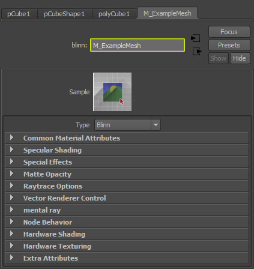
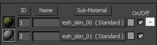
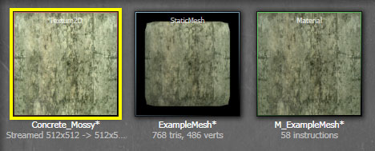

UDN
Search public documentation:
FBXMaterialPipelineCH
English Translation
日本語訳
한국어
Interested in the Unreal Engine?
Visit the Unreal Technology site.
Looking for jobs and company info?
Check out the Epic games site.
Questions about support via UDN?
Contact the UDN Staff
日本語訳
한국어
Interested in the Unreal Engine?
Visit the Unreal Technology site.
Looking for jobs and company info?
Check out the Epic games site.
Questions about support via UDN?
Contact the UDN Staff
FBX 材质通道
概述
材质支持
- Standard(标准)
- Multi/Sub-Object(多重/子对象)
- Surface(表面)
- Anisotropic(各向异性)
- Blinn
- Lambert
- Phong
- Phone E
| 贴图/纹理 | 3dsMax设置 | Maya设置 |
|---|---|---|
| Diffuse(漫反射) | Diffuse(漫反射) > Bitmap(位图) | Color（颜色） > File(文件) |
| Emissive(自发光) | Self-illumination(自身光照) > Bitmap(位图) | Incandescence(白炽) > File(文件) |
| Specular(高光) | Specular Level(高光级别) > Bitmap(位图) | Specular Color (高光颜色)> File(文件) |
| Specular Power(高光次幂) | Glossiness(光泽度) > Bitmap(位图) | Cosine Power(余弦次幂) > File(文件) |
| Normal Map(法线贴图) | Bump(凸凹贴图) > Normal Bump(法线凸凹贴图) > Normal(法线贴图) > Bitmap(位图) | Bump(凸凹贴图) > File(文件) |
多个材质

 将会在虚幻编辑器中为Multi/Sub-Object材质中的每个Standard（标准）材质创建一个材质，导入的网格物体将具有针对这些材质的插槽。当材质应用到网格物体时，这些材质将仅影响网格物体的对应多边形，就像让它们在3dsMax那样。
Maya
当涉及到在网格物体上应用多个材质时，Maya是非常简单的。您可以简单地选择你想向其应用材质的网格物体的面，然后应用材质即可。
将会在虚幻编辑器中为Multi/Sub-Object材质中的每个Standard（标准）材质创建一个材质，导入的网格物体将具有针对这些材质的插槽。当材质应用到网格物体时，这些材质将仅影响网格物体的对应多边形，就像让它们在3dsMax那样。
Maya
当涉及到在网格物体上应用多个材质时，Maya是非常简单的。您可以简单地选择你想向其应用材质的网格物体的面，然后应用材质即可。

 在虚幻编辑器中将会为每个在Maya中应用到网格物体上的材质创建一个对应材质，并且导入的网格物体将会具有针对每个材质的插槽。当材质应用到网格物体时，这些材质将仅影响网格物体的对应多边形，就像让它们在Maya中那样。
在虚幻编辑器中将会为每个在Maya中应用到网格物体上的材质创建一个对应材质，并且导入的网格物体将会具有针对每个材质的插槽。当材质应用到网格物体时，这些材质将仅影响网格物体的对应多边形，就像让它们在Maya中那样。
材质命名
 Maya
对于Maya来说，虚幻编辑器中的材质名称直接从 Maya中应用到网格物体上的着色引擎的名称转换而来。
Maya
对于Maya来说，虚幻编辑器中的材质名称直接从 Maya中应用到网格物体上的着色引擎的名称转换而来。

材质顺序
应用到网格物体上的材质的顺序是非常重要的，您可以通过使用材质的特殊命名规则来指定特定的顺序。默认情况下，虚幻编辑器中创建的材质是随机的，所以不能保证材质的顺序。这可能是个问题，比如，当处理角色时，您的角色系统什么时候认为躯干上的材质作是第一个材质、头部材质是第二个材质等。 虚幻引擎使用 skin** 命名规则来指定材质的顺序。这可以是材质的完整名称或者可以将其附加到材质的现有名称上。只要可以在材质的名称中能找到它即可。 所以，如果您具有两个需要遵循一致顺序的材质，您或许将它们命名为：-
M_ExampleMesh_skin00 -
M_ExampleMesh_skin01

贴图导入

在虚幻编辑器中新建的材质中将会创建一个Texture Sample(贴图样本)表达式，并且会将导入的贴图分配给该 Texture Sample（贴图样本）。同时会向材质中添加Texture Coordinate(贴图坐标)表达式，并且会将其连接到Texture Sample的 UVs 输入端。 如果在3D应用程序中应用到材质中的贴图格式不能和虚幻引擎兼容，那么将不会导入它们。在这种情况下，如果材质中没有要呈现的起始贴图，那么虚幻编辑器中的材质将会填充为随机的颜色Vector Parameter(向量参数)。
如果在3D应用程序中应用到材质中的贴图格式不能和虚幻引擎兼容，那么将不会导入它们。在这种情况下，如果材质中没有要呈现的起始贴图，那么虚幻编辑器中的材质将会填充为随机的颜色Vector Parameter(向量参数)。